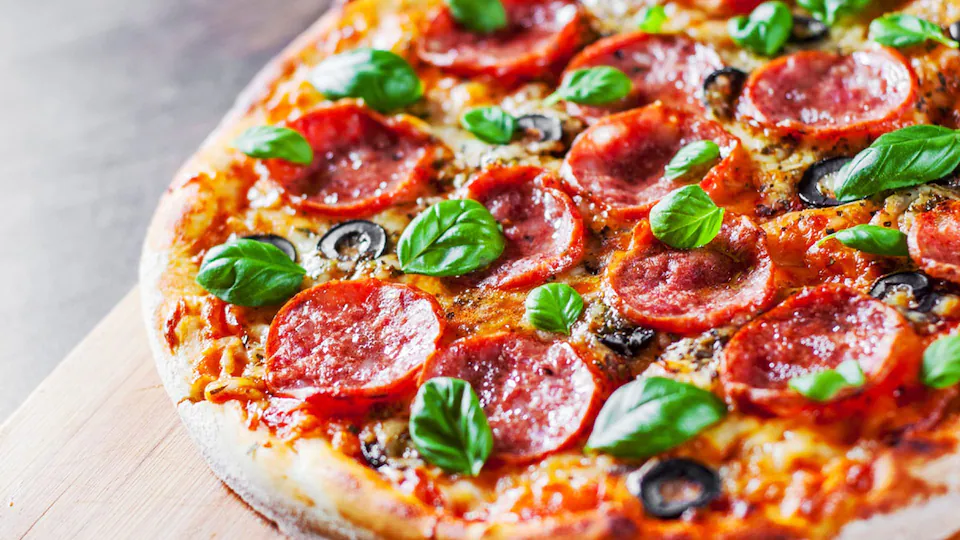

Pizza recipe

Description
You can easily make restaurant-quality Pepperoni Pizza from home, and paired with our easy homemade pizza dough and pizza sauce recipe this is the absolute BEST!
Ingredients
Pizza Dough:
- 2 1/4 teaspoons active dry yeast
- 2 teaspoon granulated sugar
- 1 1/2 cups warm water
- 3 Tablespoons olive oil
- 1 1/2 teaspoons salt
- 1 teaspoon white vinegar
- 3 ¾ – 4 cups bread flour (all-purpose flour would also work)
Toppings:
- 1 cup pizza sauce homemade or good quality store-bought
- 2 cups pepperoni
- 4 cups shredded mozzarella cheese
- 1/2 cup freshly grated parmesan cheese
- 1 teaspoon Italian seasoning
Steps
Make the Pizza Dough:
- Combine: In a large bowl of a stand mixer combine ½ cup of the warm water with the sugar and yeast. Stir to dissolve the yeast and let rest for 5 minutes. It should foam on the top. Add the remaining 1 cup of warm water, olive oil, salt and vinegar.
- Knead Dough: Begin mixing on medium-low speed, gradually adding the flour a cup at a time, and knead the dough for about 7 minutes, or until it's smooth and elastic. You may not need all of the flour. The dough should be slightly sticky, but not so sticky that it really sticks to your fingertip when touched.
- Rise: Transfer dough to a greased bowl and cover with a dry towel or greased plastic wrap. Allow to rise for 1 to 1.5 hours, or until it has about doubled in volume.
- Roll out: Gently punch the dough down and place on a lightly greased or floured counter top. Divide dough into 2 or 3 equal pieces (makes about two 14'' or three 9'' pizzas). Roll and stretch the dough to desired size and thickness. Brush dough with olive oil.
Cook Pepperoni Pizzas:
- Oven Method: Preheat oven to 450 degrees F (with a pizza stone inside, if you have one). If using a pizza stone, add cornmeal and flour to a pizza peel or parchment paper and place pizza dough on top (otherwise press the dough into a pizza pan). Prick the top of the dough a few times with a fork and pre-bake the dough in the pizza pan, or slide onto a hot pizza stone to pre-bake for 3-4 minutes. Remove from oven and add pizza sauce and toppings. Return to oven and bake for 5-12 more minutes or until the crust is golden and the cheese is bubbly.
- Pizza Oven Method*: Add cornmeal and flour to a pizza peel and place rolled out dough on top. Add toppings. Slide into preheated pizza oven and cook according to pizza oven instructions.
- Grill Method: Preheat grill to medium-high. Roll out dough and place on a piece of parchment paper. Spread with oil, then gently flip the pizza onto the grill, oil side down, and peel the parchment paper off. Cover grill lid and cook for 2-3 or until grill marks form on bottom. Flip the pizzas onto a plate and add sauce and pepperoni pizza toppings to cooked side. Reduce heat and slide pizzas back on grill to cook another 3-5 minutes